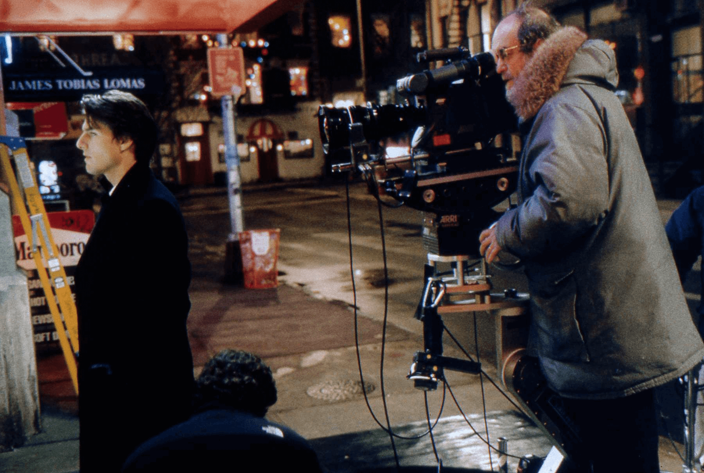
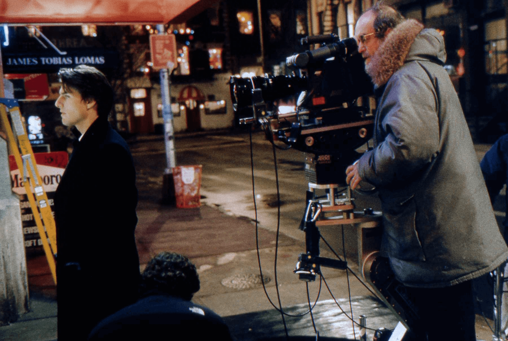

EYES WIDE SHUT
A Metascript project
The project
Metascript is an open source tool that provides a basic textual analysis framework dedicated to the comparison between an original text (novel, short story etc.) and its film transposition (film script). The goal of Metascript is to provide a guideline for the markup and metadata approach of different but connected texts such as a book with its script for audiovisual transposition. The project used Arthur Schnitzler's novel "Dream Story" and two screenplays (a '96 draft and a '99 transcript) from the film "Eyes Wide Shut," a transposition of the novel directed by Stanley Kubrick, as its working prototype. Metascript is developed in the following stages: - creation of the xml-tei model for the various texts - extraction of relevant data using python scripts - data analysis and graphical visualization of results Metascript is a project designed by Andreose Erica, Crosilla Giorgia and Zilli Leonardo for the "Digital Text in The Humanities" exam of the DHDK 2023 master's course.
 
